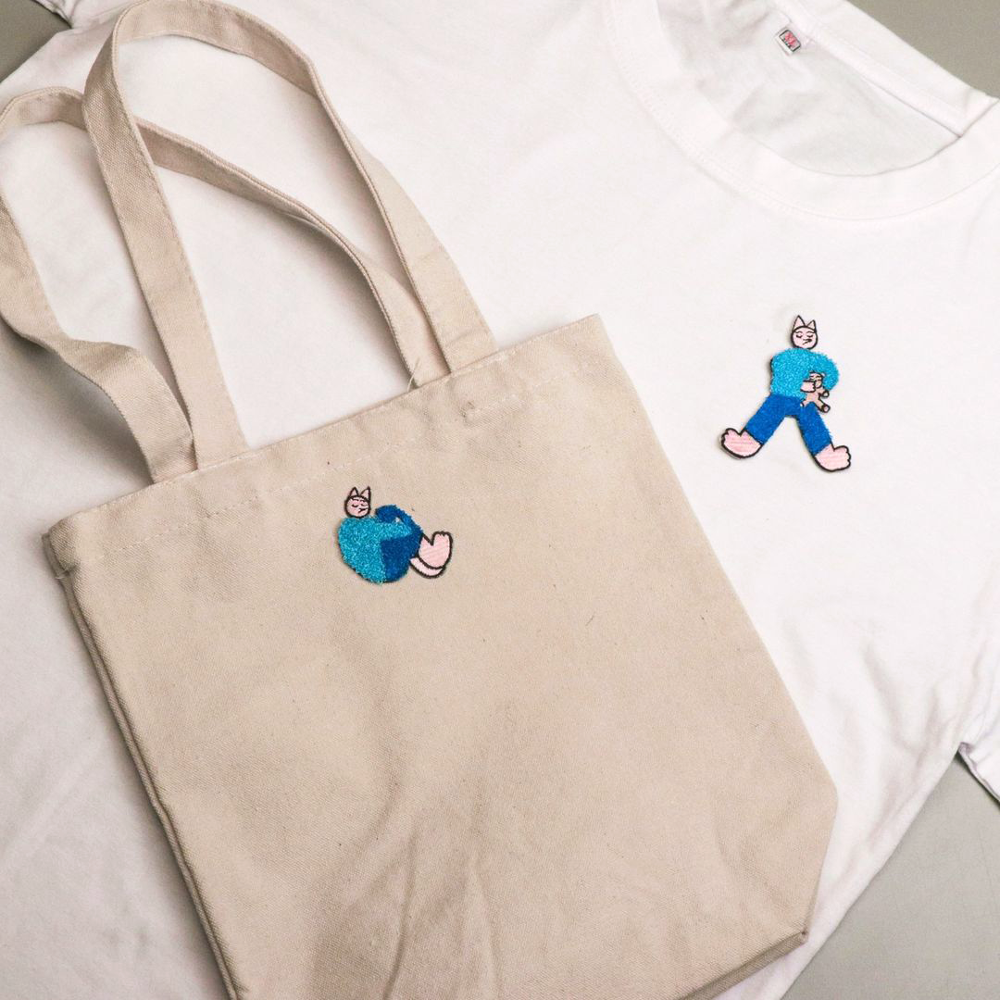
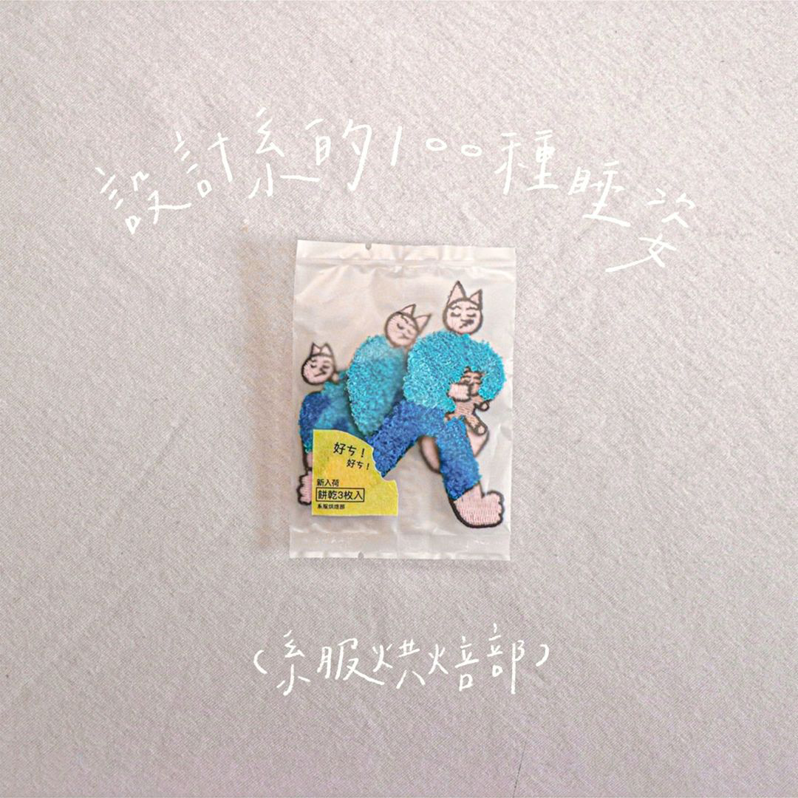
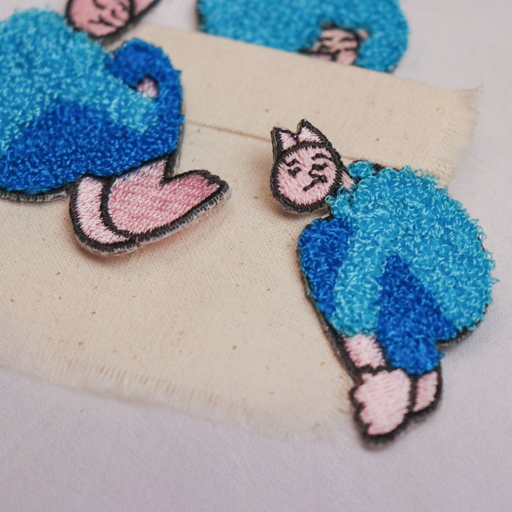

<!DOCTYPE html>
<html lang="en">

<head>
    <meta charset="UTF-8">
    <meta http-equiv="X-UA-Compatible" content="IE=edge">
    <meta name="viewport" content="width=device-width, initial-scale=1.0">
    <!-- <link rel="stylesheet" href="ttdd2022.css"> -->
    <link rel="stylesheet" href="網頁/ttdd2022_02.css">
    <link rel="shortcut icon" href="iconTest_工作區域 1.svg">
    <title>視覺部</title>
</head>

<body>

    <div class="content">


        <div class="project_01" style="width: 100%;height: 80%;">
            <div class="contentPic" style="left:15%;top:10%;z-index: 90; width: 65%;">
                
            </div>
            <!-- <div class="contentPic" style="width: 20%; left: 60%;">
                
            </div>
            <div style="width: 30%; right:60%;top:30%;" class="contentPic">
                
            </div> -->

            <!-- <video src="專案圖片/01_年度主視覺/內頁/主視覺_final.mp4" class="contentPic"
                style="width: 20%;top:45%;left:26%;z-index:100;"></video> -->
        </div>


        <div class="project_02" style="width: 100%;height: 100%;">
            <div class="contentPic" style="left:15%;top:8%;z-index: 90; width: 70%;">
                
            </div>
            <div class="contentPic" style="width: 60%; top:80%;left:26%; z-index:100;">
                
            </div>
            <div style="width: 18%; right:70%;top:90%;z-index:50;" class="contentPic">
                
            </div>
            <!-- <div style="width: 30%; right:60%;top:30%;" class="contentPic">
                
            </div>
            <video src="專案圖片/02_新生包/final首頁圖/sketch5_02.mov" class="contentPic"
                style="width: 20%;top:45%;left:26%;z-index:100;"></video>
            <video src="專案圖片/02_新生包/final首頁圖/innerVideo_02.mp4" class="contentPic"
                style="width: 20%;left:25%;z-index:100;"></video> -->
        </div>

        <div class="project_03" style="width: 100%;height: 100%;">

            <video src="專案圖片/03_系服徵稿/徵稿影片/系服徵稿 final (啟倫)-1.mp4" class="contentPic"
                style="width: 20%;left:20%;z-index:100;"></video>
            <video src="專案圖片/03_系服徵稿/徵稿影片/系服徵稿 final (部長)_1.mp4" class="contentPic"
                style="width: 20%;top:25%;left:40%;"></video>
            <video src="專案圖片/03_系服徵稿/徵稿影片/系服徵稿final.mp4" class="contentPic"
                style="width: 20%;top:50%;left:60%;"></video>
            <!-- <video src="專案圖片/03_系服徵稿/獎盃影片/1.mp4 的副本.mp4" class="contentPic"
                style="width: 20%;top:50%;left:20%;z-index:100;"></video>
            <video src="專案圖片/03_系服徵稿/獎盃影片/2.mp4 的副本.mp4" class="contentPic"
                style="width: 20%;top:78%;left:40%;z-index:100;"></video>
            <video src="專案圖片/03_系服徵稿/獎盃影片/3.mp4 的副本.mp4" class="contentPic"
                style="width: 20%;top:105%;left:60%;z-index:100;"></video>
            <div class="contentPic" style="left:20%;top:130%;z-index: 90; width: 20%;">
                
            </div>
            <div class="contentPic" style="width: 20%; left: 40%;top:160%;">
                
            </div>
            <div class="contentPic" style="width: 20%; left: 60%; top:190%;">
                
            </div> -->
        </div>

        <div class="project_05" style="width: 100%;height: 100%;">
            <div class="contentPic" style="left:20%;top:10%;z-index: 90; width: 80%;">
                
            </div>
            <!-- <div class="contentPic" style="width: 20%;  left: 40%;">
                
            </div> -->
            <div style="width: 25%; right:57%;top:27%;" class="contentPic">
                
            </div>
        </div>


        <div class="project_10" style="width: 100%;height: 100%;">
            <div class="contentPic" style="left:10%;top:10%;z-index: 90; width: 65%;">
                
            </div>
            <div class="contentPic" style="width: 22%; left: 58%;top:68%;">
                
            </div>
            <div style="width: 22%; left:58%;top:40%;" class="contentPic">
                
            </div>
        </div>


        <div class="project_11" style="width: 100%;height: 100%;">
            <div class="contentPic" style="left:27.5%;top:10%;z-index: 90; width: 26%;">
                
            </div>
            <div class="contentPic" style="width: 13%; left: 18%;top:51%;">
                
            </div>
            <div class="contentPic" style="width: 13%; left: 7%; top:51%;">
                
            </div>
            <div class="contentPic" style="width: 33%; left: 53%; top:19.8%;">
                
            </div>
            <video src="專案圖片/11_回回/final首頁/MVI_7254.MP4" class="contentPic"
                style="width: 33%;top:58.5%;left:53%;z-index:100;"></video>
        </div>


        <div class="project_12" style="width: 100%;height: 100%;">
            <div class="contentPic" style="left:22%;top:98%;z-index: 90; width: 40%;">
                
            </div>
            <div class="contentPic" style="width: 15%; top:129%; left: 63.5%;" class="rotate90">
                
            </div>
            <!-- <div style="width: 35%; right:50%; z-index: 100;" class="contentPic">
                
            </div> -->
            <!-- <div style="width: 50%; left:15%;top:98%; z-index:80 ;" class="contentPic">
                
            </div> -->
            <!-- <video src="專案圖片/12_講座/final首頁/innerVedio_12.mov" class="contentPic"
                style="width: 20%;top:45%;left:26%;z-index:100;"></video> -->
        </div>


        <div class="project_13" style="width: 100%;height: 100%;">
            <!-- <div class="contentPic" style="left:20%;top:10%;z-index: 90; width: 50%;">
                
            </div> -->
            <div class="contentPic" style="width: 50%; left: 20%; top:68%;">
                
            </div>
            <div style="width: 50%; right:20%;top:0%;z-index: 100;" class="contentPic">
                
            </div>
            <!-- <div style="width: 30%; right:60%;top:30%;" class="contentPic">
                
            </div> -->
            <video src="專案圖片/13_小設盃/final首頁/第二篇.mov 的副本.mov" class="contentPic"
                style="width: 20%;top:45%;left:26%;"></video>
        </div>


        <div class="project_14" style="width: 100%;height: 100%;">
            <div class="contentPic" style="left:9%;top:50%;z-index: 90; width: 26%;">
                
            </div>
            <div class="contentPic" style="width: 20%; left: 68%;top:0%;">
                
            </div>
            <div class="contentPic" style="width: 20%; left: 18%; top:10%;">
                
            </div>
            <div class="contentPic" style="width: 50%; left: 21%; top:0%;">
                
            </div>

        </div>


        <div class="project_15" style="width: 100%;height: 100%;">
            <div class="contentPic" style="left:41%;z-index: 90; width: 47%;">
                
            </div>
            <div class="contentPic" style="width: 23%; left: 12.6%;z-index: 100;top:8.5%;">
                
            </div>
            <div style="width: 32%; left:12%;top:41%;" class="contentPic">
                
            </div>
            <!-- <div style="width: 30%; right:10%;top:70%;" class="contentPic">
                
            </div> -->
            <!-- <div style="width: 30%; right:60%;top:30%;" class="contentPic">
                
            </div> -->
        </div>


        <div class="project_16" style="width: 100%;height: 100%;">
            <div class="contentPic" style="left:16%;top:10%;z-index: 90; width: 32%;">
                
            </div>
            <div class="contentPic" style="width: 32%;top:10%; left: 48%;">
                
            </div>
        </div>


    </div>

    <script src="ttdd2022.js"></script>
</body>

</html>